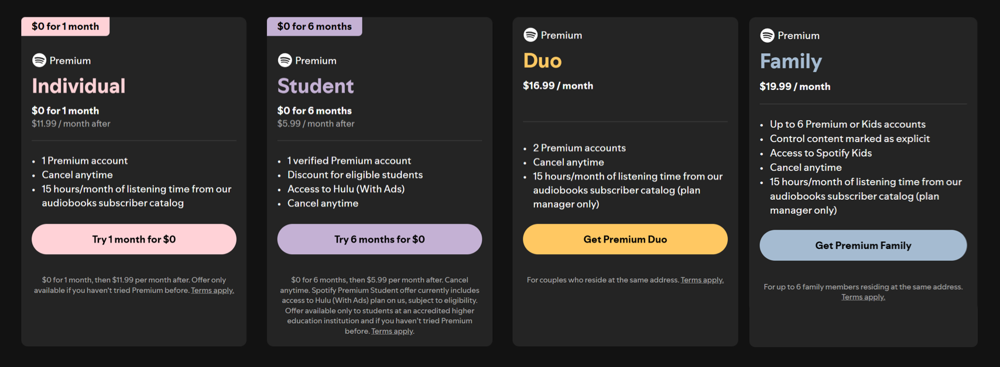
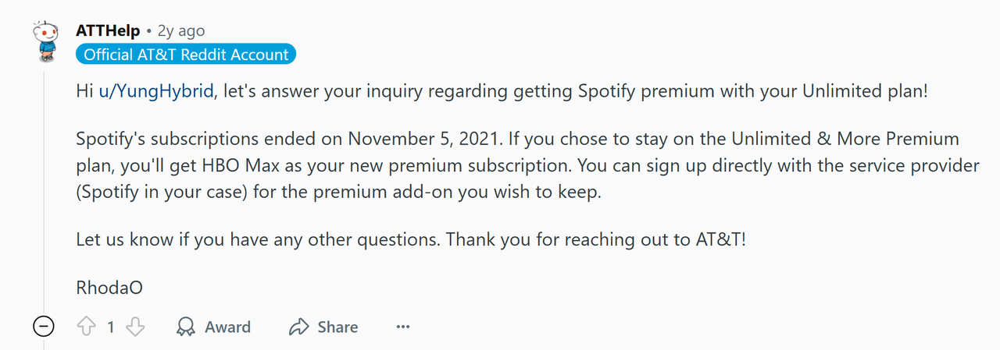
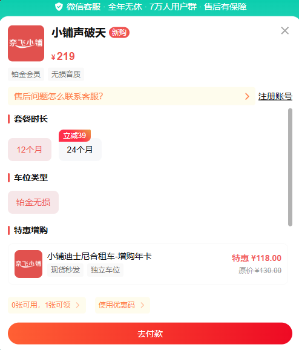
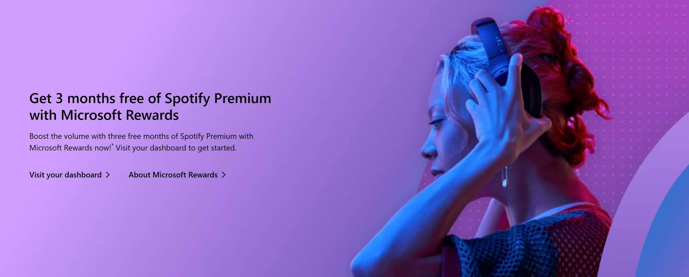
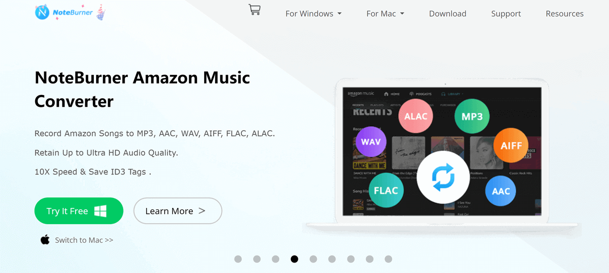

2025年免费获取Spotify Premium的13种可靠且合法的方法

还在苦苦寻觅如何免费获得 Spotify Premium 吗？本指南将带你了解 13 种在 2025 年依然有效的方法——每一种方法都经过验证且保持最新。我还会为你整理一些你可能在网上见过的过时技巧，让你无需再浪费时间在那些不再有效的方法上。
作为全球最大的音乐流媒体平台，Spotify 截至 2025 年第二季度的月活跃用户超过 6.96 亿，其中付费用户约 2.76 亿。Premium 之所以受欢迎，是因为它可以去除广告、提供更高的音质、无限次跳过以及离线收听——所有这些优势让流媒体体验更加流畅。
但每月 11.99 美元的 Premium 价格并不便宜。因此，如何以更低的价格，甚至免费获得 Premium，仍然是许多用户的热门话题。
Spotify Premium 与免费版：Premium 值得吗？
在深入探讨如何免费获得 Spotify Premium 之前，让我们先快速了解一下 Premium 和 免费 版之间的主要区别。这样，如果你以前从未订阅过，你就会知道 Premium 是否真的值得。
| 特征 | 免费版本 | 高级版 |
|---|---|---|
| 广告 | 是的，经常有广告 | 完全无广告 |
| 跳过 | 每小时限6次 | 无限次跳过 |
| 音频质量 | 标准(最高 160 kbps) | 高品质(高达 320 kbps) |
| 下载 | ❌ 禁止离线收听 | ✅ 下载以供离线播放 |
| 播放模式 | 仅限移动设备随机播放 | 随时播放任何歌曲 |
| 设备支持 | 有限的 | 无缝兼容手机、平板电脑、PC、汽车、智能音箱等设备 |
正如你所见，Spotify 免费版 和 高级版 之间的差异不仅仅在于技术规格，而是你在日常生活中能够真切感受到的。事实上，你甚至可以说高级版以微妙而有意义的方式提升了你的整体生活质量。
例如，你的通勤不会被广告打扰，你可以在锻炼期间自由切换歌曲而不必担心跳过限制，并且你可以提前下载播放列表以便在旅行时离线欣赏音乐。
除此之外，升级后的音质也让一切更加身临其境。这种自由与控制的结合正是 Spotify Premium 值得考虑的原因。
如何在 2025 年免费获取 Spotify Premium
正如我们上面所述，Spotify Premium 让音乐体验更加出色——无广告、音质更高、无限次跳过以及离线播放。这项升级将音乐无缝融入你的日常生活。
为了找到最佳的省钱方法，我浏览了Spotify的官方网站以及合作伙伴的最新推广页面。我确认了几种可行的方法，并将它们汇总在本指南中。
这些选项涵盖了不同的需求和用户情况。接下来，我们将介绍 2025 年在美国获取 Spotify Premium 的 9 种行之有效的方法，以便你选择最适合自己的方法。
试用 Spotify Premium 官方免费试用版
如果你之前从未订阅过 Spotify Premium，官方免费试用是最直接、最安全的获取方式。目前，Spotify 为个人套餐提供 1 个月免费试用，学生套餐则可享受长达 6 个月的免费试用。
具体的试用时长可能有所不同，但 Spotify 经常推出促销活动，你可以免费获得 1-3 个月的试用期，在特殊节日或促销活动期间，试用期甚至可能延长至 6 个月。在试用期间，你可以完全使用所有 Premium 功能，获得全面升级的音乐体验。
请记住：试用期结束后，Spotify 将自动向你收取下一个计费周期的费用。因此，如果你只想享受免费试用期，请务必在试用期到期前取消。
如何逐步获取：
- 前往 Spotify 官方网站或下载应用程序。
- 注册一个新帐户，或使用符合条件的现有帐户登录。
- 选择高级计划并添加付款方式(信用卡/PayPal)。
- 在试用期结束前取消以避免被收费。
💡 专业提示：如果你之前已经使用过 Spotify Premium 并想要再次免费试用，则可以使用其他电子邮件创建新帐户。
缺点是你会丢失旧的播放列表和收听历史记录。如果你想保留现有帐户，不用担心——下面还有其他方法可能更适合你。
运营商捆绑优惠(美国移动)
在研究过程中，我注意到许多博客仍然提到 AT&T 的 Unlimited & More Premium 套餐包含 Spotify Premium。然而，经过仔细核实，我可以确认这项服务已于 2021 年正式停止。AT&T 已用 Pandora 和其他娱乐服务取代了 Spotify Premium。
另外两家主要运营商 Verizon 和 T-Mobile 也不再将 Spotify Premium 与其计划捆绑在一起。
话虽如此，我还是找到了一家仍然提供间接获取 Spotify Premium 的运营商——US Mobile。虽然它不会直接提供 Premium 套餐，但部分套餐包含每月服务抵扣额。你可以用这笔抵扣额来支付 Spotify、Netflix、Disney+ 等服务的订阅费用。
它的工作原理如下：
- 你需要选择 US Mobile 的 Premium Unlimited 计划。
- 如果你根据此计划激活 3 条电话线路，US Mobile 每月将为你提供一次免费服务积分。
- 该积分可以兑换流媒体服务，例如 Spotify Family(注意：这是家庭计划，而不是个人计划)。
你可以随时查看美国移动官方网站了解最新的计划详情和兑换规则，以确保你符合要求。
使用家庭计划
除了官方免费试用外，拆分 Spotify Premium 家庭套餐 也是人们最常用的省钱方式之一。家庭套餐最多支持 6 个账户 ，如果平均拆分，每人每月只需支付几美元——与支付全价相比几乎"免费"。
当然，并非每个人都有朋友或家人可以分享。如果你有这种情况，但仍想选择低成本的选择，那么我接下来介绍的 第三方帐户共享平台 可能更适合你。
第三方账户共享平台
官方免费试用结束后，我个人就转而通过 奈飞小铺 等订阅共享平台购买Spotify 账户。价格比直接订阅要低得多，但体验与普通的 Premium 账户完全相同。
对于有类似需求的用户(想要获得完整的高级功能而又不想支付全价)，此选项非常划算，值得考虑。
奈飞小铺 是目前评价最高的账号共享平台之一。它服务稳定，使用流程也非常便捷。它会为你分配一个符合高级家庭套餐的独立账号，让你可以像使用自己的账号一样享受无广告的收听体验、高品质音频和离线播放。
通过 奈飞小铺 分享的费用通常比官方订阅便宜70%以上。有时，通过平台积分、促销或推荐奖励，你甚至可以以更低的价格获得Premium。
你只需前往 奈飞小铺 官网，注册账号，选择你索要的订阅周期（两年付还能再减39 ¥），并完成支付即可。如有任何关于支付方式、激活时间或其他问题，你可以随时咨询他们的在线客服。
我在讨论如何免费观看 Disney+时提到过这种方法，很多读者觉得非常实用。虽然账号共享平台并非完全免费，但与可以随时取消的运营商或品牌合作方案相比，它们在稳定性、长期使用和灵活性方面更具优势，因此绝对值得推荐。
品牌合作促销(小米、一加和星巴克)
品牌合作是免费或以较低价格 获得 Spotify Premium 的另一种方式，通常与特定购买或产品所有权挂钩。如果你已经是某些品牌的客户或计划购买其产品，则此选项最适合你。
截至 2025 年 8 月 29 日 ，以下合作伙伴关系仍然有效：
购买小米设备
2025年初，小米推出了Spotify Premium合作促销活动：如果你购买或已经拥有某些小米设备，你可以免费领取Premium。
- 高端机型(例如小米13T系列、14系列、15系列、Mix Flip)→4个月免费试用
- 中端设备(例如 Redmi Note 12 / 13 / 14 系列、Buds 5、Watch 2 等)→ 3 个月免费试用
- 入门级设备 → 2 个月免费试用
此促销活动有效期至 2026 年 8 月 8 日，并且仍在进行中。
如需兑换，只需打开小米-Spotify官方促销页面，输入你的设备详细信息，然后登录或注册你的Spotify帐户即可。系统将根据你的设备型号自动确定你可享受的免费使用月数。
购买 OnePlus 设备
OnePlus 用户可以通过其会员系统免费领取 4 个月的 Spotify Premium 服务。你只需在手机的设置菜单中将 OnePlus 设备关联到你的 Red Cable Club 账户即可;在主页上，你会看到"4 个月免费 Spotify Premium"选项，然后按照提示激活即可。
此优惠已延长至 2026 年 3 月 19 日，且仍在有效期内。但仅限从未使用过 Premium 的新账户使用;已关联至 OnePlus 并参与过其他促销活动的账户无法再次领取。
💡注意：小米和一加均仅适用于首次订阅Premium的新用户 ， 现有用户无法再次领取。
成为星巴克员工
星巴克为其美国员工和合作伙伴提供 Spotify Premium 订阅，作为员工福利之一，包括无广告收听和完整的 Premium 功能。你可以在星巴克的"合作伙伴福利"页面上正式查看这项福利。但前提是，你必须是星巴克的正式员工。
上述方法仅适用于 少数人群 ，例如计划购买新手机或考虑在星巴克工作的人。因此，我不强烈推荐这些选项——我只是在这里列出它们，以便那些已经符合条件的人不会错过。
对于 大多数人 来说，获取 Spotify Premium 更实际、更稳定的方式仍然是通过第三方账户共享平台。
加入 Microsoft Rewards
微软目前正在进行 Spotify 独家促销活动。通过加入 Microsoft Rewards ，新的 Spotify Premium 用户可 免费 获得最多3 个月的 Premium 服务。
流程很简单：在优惠开始后的 14 天内，至少连续 3 天使用必 应搜索 完成任务。完成后，你将在 Microsoft Rewards 仪表板中收到兑换选项(链接或代码)，你可以使用该选项直接在 Spotify 上激活 Premium。
📌 请注意：免费试用期结束后，你的订阅将自动续订为 个人套餐，价格为每月 11.99 美元 。如果你只想使用免费服务，请务必在试用期结束前取消订阅，以免产生费用。
如何索取：
- 访问Microsoft Rewards 网站。
- 使用你的 Microsoft 帐户注册或登录。
- 在 14 天内，在 3 个不同的日子完成 Bing 搜索。
- 任务完成后，从你的奖励仪表板获取兑换链接或代码并在 Spotify 上激活 Premium。
👉 此外，你还可以随着时间的推移积累 Microsoft Rewards 积分，并将其兑换为 Spotify 礼品卡 。通过持续的日常搜索和任务，大多数用户可以在大约 2-3 个月 内获得足够的积分来支付一个月的 Premium 费用。
积分兑换平台
积分兑换平台是另一种小众但实用的获取 Spotify Premium 的方式。它的理念很简单——完成任务赚取积分，然后用这些积分兑换 Premium 订阅。
最常见的两个平台是：
- Microsoft Rewards： 关于积分任务的具体要求以及最新的活动详情，你可以随时登录Microsoft Rewards 官方页面，实时更新可参与的任务以及对应的积分奖励，确保你获取最准确的信息。
- Google Opinion Rewards： Google Opinion Rewards 是 Google 官方推出的一款问卷调查应用。下载这款 Google 问卷调查应用，完成简短的问卷调查即可赚取 Play 积分，并用这些积分支付 Spotify Premium 的费用。
两者都允许你将累积的积分兑换为 Spotify Premium，如果你已经定期使用这些服务，这将是一个方便的选择。
注意： 许多用户反映，从 Microsoft Rewards 获取的代码在 Spotify 兑换页面上显示无效。如果你遇到此问题，建议你联系 Microsoft 或 Spotify 客服。此外，此优惠仅适用于 Spotify Premium 新用户。
订阅捆绑优惠(Xbox Game Pass)
如果你订阅了 Xbox Game Pass Ultimate，则可以在"Perks"页面申请免费的 Spotify Premium 试用。此优惠通常提供最多 6 个月的 Premium 试用期。此优惠也仅限于从未 订阅过 Premium 的新用户。
Spotify礼品卡
Spotify 礼品卡是另一种免费或以较低价格获得 Premium 服务的方式。礼品卡可以通过 Spotify 网站、亚马逊、百思买、沃尔玛和其他渠道购买和兑换。常见面值为 10 美元、30 美元和 60 美元，分别对应 1 个月、3 个月和 6 个月的 Premium 服务。
在促销期间，一些在线零售商会提供礼品卡折扣或返现，这比直接订阅更划算。不过，礼品卡仅适用于个人高级版订阅，不适用于家庭版、双人版或学生版。此外，兑换礼品卡时请注意地区限制。
使用Spotify音乐转换器(不推荐)
有些音乐转换器可以下载Spotify上的歌曲并将其转换为MP3或其他格式，让你无需付费订阅即可离线收听。接下来，我将介绍一款主流工具，向你展示它的使用方法。
以 NoteBurner Spotify 音乐转换器为例
- 下载并安装 ：前往 NoteBurner 官方网站并根据你的系统(Windows 或 macOS)下载安装程序。
- 导入 Spotify 歌曲/播放列表 ：打开软件后，将要从 Spotify 下载的歌曲、专辑或播放列表拖到 NoteBurner 窗口中，或者复制并粘贴 Spotify 链接。
- 选择输出格式 ：在设置中，选择你需要的音频格式(MP3、AAC、WAV、FLAC 等)。你还可以自定义音频质量(最高 320 kbps)和输出路径。
- 开始转换 ：点击"转换"按钮。软件将以 10倍速 处理并将歌曲保存到你的本地文件夹。
- 离线播放 ：转换完成后，你可以在任何支持音频文件的设备上播放文件(手机、平板电脑、汽车音响系统)，而无需依赖 Spotify 应用程序。
虽然从技术上讲，Spotify 音乐转换器或许能提供一种"免费"获取音乐的方式，但由于技术限制和道德方面的考量，我们 并不推荐这种解决方案 。相反，本指南中提到的其他合法方法——例如第三方共享平台或积分兑换——更为可靠，值得考虑。
结论
2025年，获取Spotify Premium的方式多种多样：官方免费试用、学生折扣、家庭套餐共享、运营商或品牌合作、积分兑换，甚至还有音乐转换器。每种方式都有其优缺点，但大多数都存在使用时间或用户限制。
如果你想长期、稳定且低成本地享受完整的 Premium 体验，第三方账号共享平台是最实用的选择。奈飞小铺 不仅将价格降至官方订阅的三分之一左右，还提供即时交付和全天候客户支持，让整个过程更加轻松无忧。
👉 立即前往 奈飞小铺 ，以更低的价格开始欣赏你最喜爱的音乐!
常问问题
如何免费获得 3 个月的 Spotify 使用权？
你可以通过 Spotify 网站、Microsoft Rewards、Xbox Game Pass 或小米和一加等设备制造商免费获得 3 个月的 Spotify Premium 服务。这些优惠通常仅适用于首次订阅 Premium 的新用户。
Spotify 的欢迎回归优惠是什么？
Spotify 的"欢迎回归"优惠为老用户提供 Premium 会员折扣，通常 3 个月 9.99 美元或 1 个月 0.99 美元。该优惠针对已取消订阅的旧用户，鼓励他们重新加入。优惠有效期和价格因地区和时间而异。
最便宜的 Spotify 订阅是多少？
Spotify 最便宜的订阅方案是学生套餐，在美国每月 5.99 美元，包含所有高级功能——无广告收听、离线下载和无限次跳过。在某些地区，Duo 或促销活动可能会降低价格，但学生套餐通常是最低的。